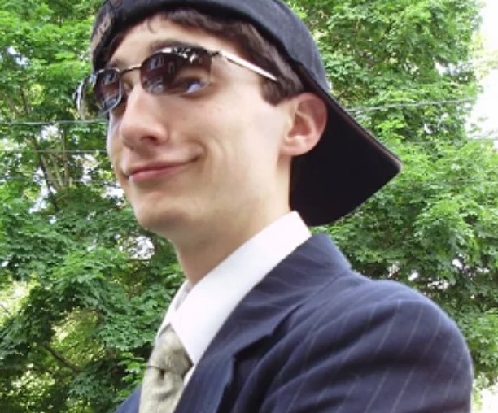
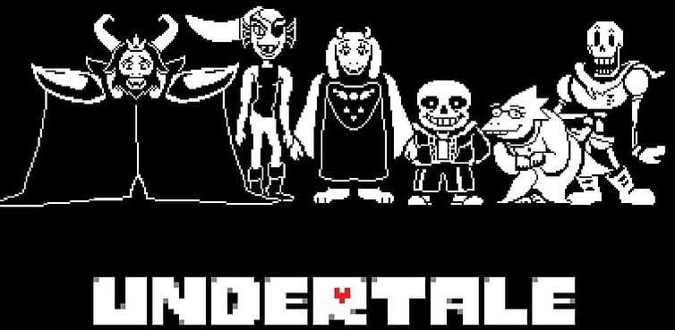

Undertale
The Story of Undertale
By Bob Temmie
HOi! I'm Bob! i Am goiNg To TELl YoU AboUt The StoRY Of UNDErTalE! BUT FirSt We MUst Go Back WhErE It All BEGAN
Robert F. Toby Fox is an American video game developer and composer. Best known for creating role-playing video games like Undertale & DeltaRune, which garnered acclaim and has received nominations for a British Academy Game Award, three Game Awards and D.I.C.E. Awards. “You kill a lot of random monsters, (sometimes even humans) in every RPG and the consequences for this are never addressed."
“What if they were?”
This question sparked the idea for the indie game Undertale, an RPG made by Toby Fox, who did all the writing, programming, music and some of the art for the game. The rest of the artwork is done by one of his friends Temmie Chang and other few artists that are credited in the first Kickstarter campaign for Undertale! Earthbound on the Super Nintendo and other games back in Tobys childhood had a lasting impression on him.
Creation
“I was so young that it helped me learn to read, and also transformed my brain forever.” Besides gaming, in highschool he started playing the piano and trumpet, which in turn sparked his love for composing music. Fast forward to his time in college, where Toby started putting together the building blocks for his first real video games project. He initially didn’t start with a concrete idea for either gameplay or story. The first piece of inspiration actually came from Wikipedia.
Concept
"I wanted to create a system that satisfied my urge for talking to monsters." Toby felt that it was important to make every monster feel like an individual. He said that: “All monsters in RPGs like Final Fantasy are the same, besides the design. Toby used GameMaker 8 to create a demo for Undertale. As for Undertale’s core concept, he wanted to make an RPG that is different from all the games he grew up with. Collabarating with others with the art while he set some rules for his game, he sees the vision and going to it.
"I want to make an RPG game where you could befriend all of the bosses; where not killing everything is actually a viable option. Since every RPG is about killing monsters."
The idea of being trapped in an underground world was partially influenced by the game Brandish. As stated earlier, Toby already made a combat system of sorts before anything else, but it would take up a lot of time to polish and refine his unique take on turn based battles. He took inspiration from Mario & Luigi RPG Games like one called Superstar Saga. He made it at least simple and playable for those who can enjoy his game.
Game Lore
Long ago, two races ruled over Earth: Humans and Monsters. One day, war broke out between two races. After a long battle, the humans were victorious. They sealed the monsters underground with a magic spell. Many years later it became forgotten, there were stories talking about the mountain. Legends say that those who climb the mountain never return. You, the player, fell into the underground, surprisingly you survived the fall. You choose the experience of how the monster's outcome will be. You choose how will your story will end.